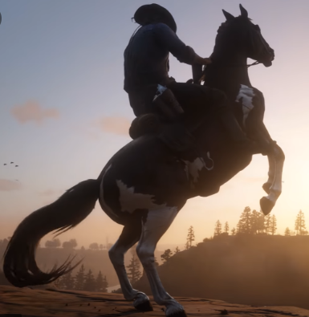
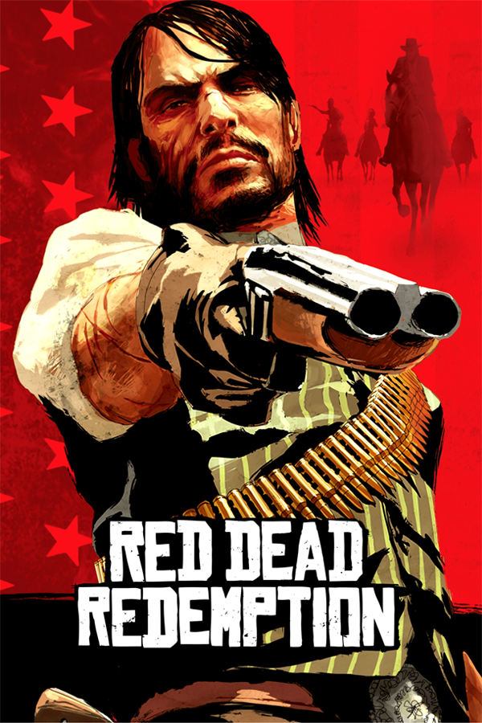

About RDR2
While the main theme of the original game was to protect family at all costs, Red Dead Redemption 2 tells the story of the breakdown of a family in the form of the Van der Linde gang. The team was interested in exploring the story of why the gang fell apart, as frequently mentioned in the first game.
More about Rdr2:RED DEAD REDEMPTION

Inspirational Arthur Morgan Quotes
- You don't get to live a bad life and have good things happen to you.
- We can't change what's done, we can only move on
- Vengeance is an idiot’s game.
- Humanists are not characteristically strong in faith, hope, and love.
- Lack of something to feel important about is almost the greatest tragedy a man may have.

John Marston
John Marston (1873-1911) is a former outlaw, a rancher, and the protagonist of Red Dead Redemption.Arthur was John's senior by ten years, born in 1863. Both Arthur and John were adopted into the Van Der Linde gang at young ages, making Dutch something of a surrogate father figure to both men.
More about Rdr:RED DEAD REDEMPTION